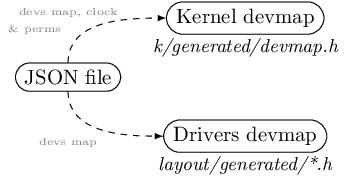

9.13. Hardware layout¶
9.13.1. Managing the portability¶
Architecture-specific content of the kernel should be hosted in the arch/<arch_type> directory. The other parts of the kernel should be portable enough to support various architectures without requesting complex modifications or implementation design.
9.13.1.1. Handling heterogeneous boards¶
For each supported board, there is a specific file in JSON format, describing its SoC and peripherals.
The example below defines a SoC USART1 device:
{
"usart1": {
"type":"block",
"address":"0x40011000",
"size":"0x400",
"memory_subregion_mask":"0",
"irqs": [
{ "name":"USART1_IRQ", "value":"53" }
],
"gpios": [
{ "name":"USART1_TX", "port":"GPIO_PB", "pin":"6" },
{ "name":"USART1_RX", "port":"GPIO_PB", "pin":"7" },
{ "name":"USART1_SC_TX", "port":"GPIO_PA", "pin":"9" },
{ "name":"USART1_SC_CK", "port":"GPIO_PA", "pin":"8" }
],
"read_only": "false",
"permission": "PERM_RES_DEV_BUSES",
"enable_register":"r_CORTEX_M_RCC_APB2ENR",
"enable_register_bits": ["RCC_APB2ENR_USART1EN"]
},
}
This entry defines all the required information to generate:
- a kernel header named
devmap.h- userspace headers, hosting information that generic drivers need (IRQ number, GPIO references, device mapping address and size)
Device maps are generated at build time, as shown below:
{kind=link}
9.13.2. Drivers layout¶
9.13.2.1. Generated devinfo structure¶
All generated header files are based on a generic device description which is
defined in the generated/devinfo.h file.
The devinfo file generate a dedicated device information structure, which includes:
- the device address
- the device size (in bytes)
- the device GPIO table
The device information structure is:
struct user_driver_device_gpio_infos {
uint8_t port;
uint8_t pin;
};
struct user_driver_device_infos {
physaddr_t address;
uint32_t size;
struct user_driver_device_gpio_infos gpios[14];
};
9.13.2.2. Using the generated data¶
Each device GPIO table entry is named after the GPIO name in the JSON file. This allows the device driver to use names instead of indices in the device definition structure, avoiding any problem if GPIO order is modified in the JSON file.
To this structure, the device IRQ(s) are also defined using preprocessing, and can be directly used in the device driver.
For the USART1 device declared as a JSON structure described previously, the header file generated has the following structure:
#ifndef USART1_H_
# define USART1_H_
#include "generated/devinfo.h"
#define USART1_IRQ 53
/* naming indexes in structure gpios[] table */
#define USART1_TX 0
#define USART1_RX 1
#define USART1_SC_TX 2
#define USART1_SC_CK 3
static const struct user_driver_device_infos usart1_dev_infos = {
.address = 0x40011000,
.size = 0x400,
.gpios = {
{ GPIO_PB, 6 },
{ GPIO_PB, 7 },
{ GPIO_PA, 9 },
{ GPIO_PA, 8 },
{ 0, 0 },
{ 0, 0 },
{ 0, 0 },
{ 0, 0 },
{ 0, 0 },
{ 0, 0 },
{ 0, 0 },
{ 0, 0 },
{ 0, 0 },
{ 0, 0 },
}
};
#endif
Each GPIO can be accessed, for example, using:
uint8_t usart1_xmit_port = usart1_dev_infos.gpios[USART1_TX].port;
uint8_t usart1_xmit_pin = usart1_dev_infos.gpios[USART1_TX].pin;
uint8_t usart1_rcv_port = usart1_dev_infos.gpios[USART1_RX].port;
uint8_t usart1_rcv_pin = usart1_dev_infos.gpios[USART1_RX].pin;